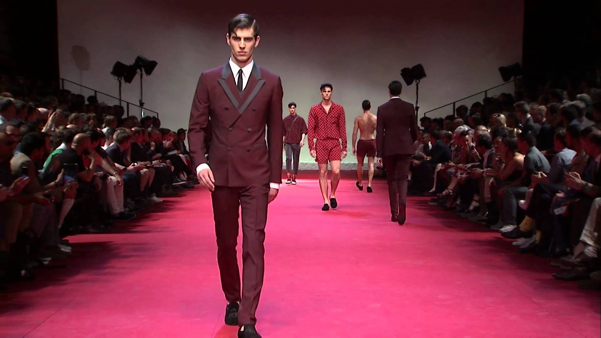
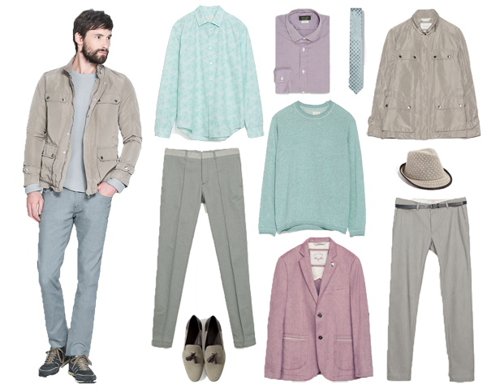
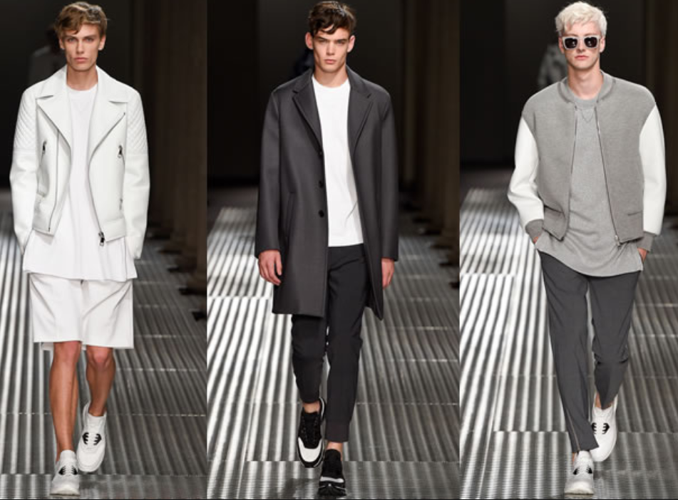
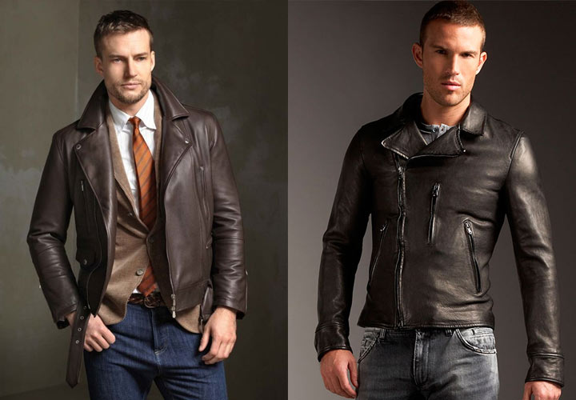
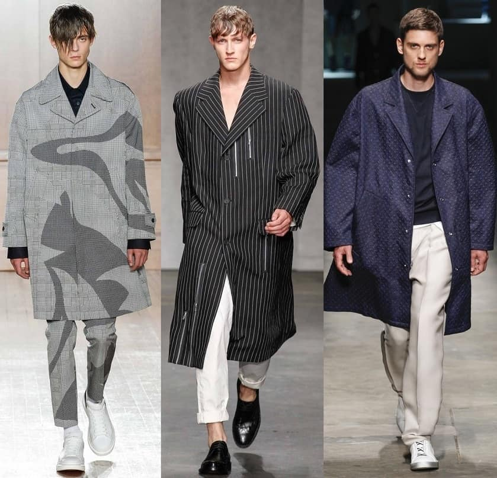
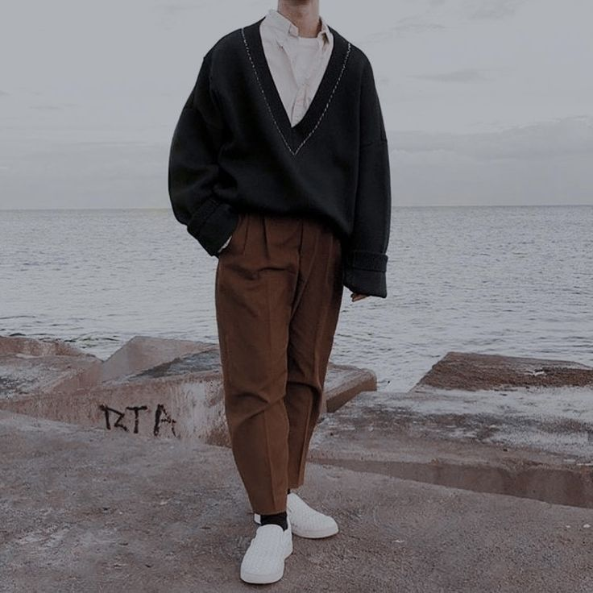

Летние виды спорта:
Мужская мода
 Локдаун не мог не отразиться на мире моды. Минувший сезон получился довольно сдержанным, но простые уютные образы в стиле домашней одежды всем успели порядком надоесть. Сегодня дизайнеры стремятся восполнить это, выводя на подиумы моделей в сложных луках, экспериментируя с широкой палитрой и вещами-манифестами.
Цветовая палитра 2023
 Цвет всегда играет важную роль в мужской моде. Пастельные оттенки были чрезвычайно популярны в прошлом году и остаются таковыми в этом сезоне. Кроме того, существует коричневый цвет. Наряду с оранжевым и красным (в светлых и темных вариациях), этот цвет чаще всего можно увидеть на подиумах. Если посмотреть на улицах, то классический образ оливкового, черного и серого все чаще дополняется коричневым. Этот тренд, безусловно, является следствием множества бежевых пальто и коричневых замшевых курток прошлого года.
Минимализм
 Некоторые гуру моды утверждают, что минимализм – это не стиль, а философия, мировоззрение. Тренд берет корни в концепции осознанного потребления, стремительно распространяющейся по планете уже не первый год. Отказ от импульсивных покупок и бездумного собирательства в пользу продуманного базового гардероба – основа минималистичного подхода. Образы в этом стиле лишены избыточной декоративности, функциональны, органичны, но при этом выглядят дорого. Простота – обратная сторона элегантности, как говорят французы. Вещи в минималистичном стиле отлично сочетаются между собой.
Кожа
 последние годы этот материал пользуется вниманием дизайнеров как люксовых брендов, так и производителей, ориентированных на масс-маркет. За всю историю человечества интерес к кожаной одежде никогда и не иссякал, этот материал был одним из первых, из которого наши предки десятки тысяч лет назад изготавливали одежду. Сегодня же особым шиком считается не столько натуральная кожа, сколько высокотехнологичные материалы, имитирующие ее: дерматин, рециклированная кожа, PU. Однако с натуральным материалом продолжают работать многие модные дома, и моветоном (в отличие от натурального меха) это не считается. Наряду привычными куртками и плащами, в тренде мужские рубахи, брюки, жилеты, пиджаки, головные уборы.
Объемные вещи

Оверсайз тоже не сдает позиций в 2023 году. И вряд ли ему грозит забвение в обозримом будущем.
Такие вещи пришли на смену облегающим и подчёркивающим фигуру предметам гардероба и поначалу были приняты неоднозначно. Впрочем, как и любые когда-либо появляющиеся идеи,
выпадающие из общего контекста. Объемные худи, кардиганы, свитеры мы видели и в прошлых сезонах. А сегодня компанию пополнили нарочито широкие брюки с явно избыточной длиной штанин.
Тренд на объем затронул и верхнюю одежду. То, что женщины практикуют вовсю уже несколько лет, сегодня позволено и мужчинам. Зимой мы наверняка увидим широкие пуховики с гигантскими капюшонами.
Оверсайза, однако, не должно быть слишком много. Сочетать объемные плечевые вещи стоит с базовыми брюками ровного кроя.

Наверх
Vkontakte
Telegram